Key to infraorders of Nematocera
1.
- Wing well-developed, longer than thorax.
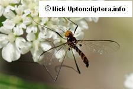
 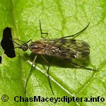
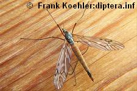
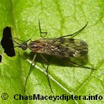
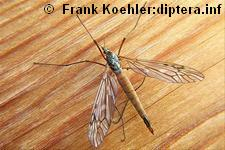
2
- Wing absent or greatly reduced (usually shorter than thorax).
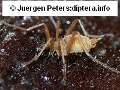


15
- Wing extremely narrow, with greatly
reduced venation and extraordinarily long fringes or broader with a network of fine crease-like
lines between the more than 5 longitudinal veins .
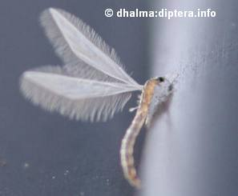
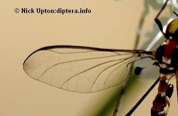
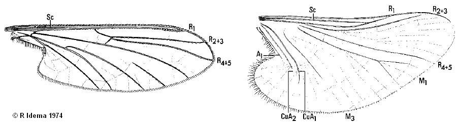
Blephariceromorpha
- Wing broader, with more complete venation and without a network of crease-like lines between the main veins .
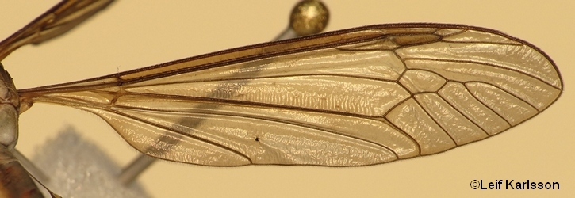
3
- Scutum with a more or less distinct V-shaped suture; legs long and slender.
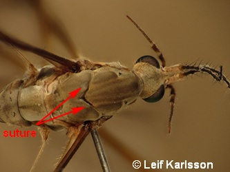

4
- Scutum without V-shaped suture. Legs variable.
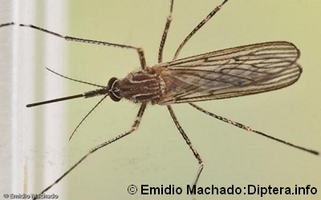
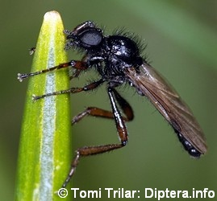
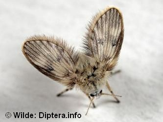
5
- Wing with 1 anal vein reaching wing margin.
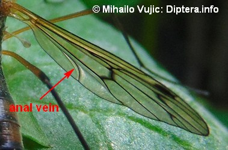
Ptychopteromorpha
- Wing with 2 anal veins reaching wing margin.

Tipulomorpha
- Ocelli absent.
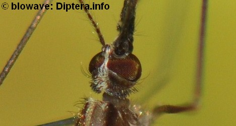
6
- Ocelli present.
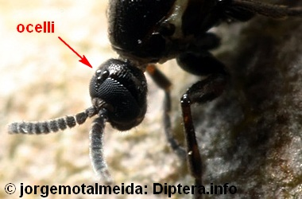
9
- Ten (in some Psychodidae 11) veins, or their branches,
reaching the wing margin; costa continuous around wing.
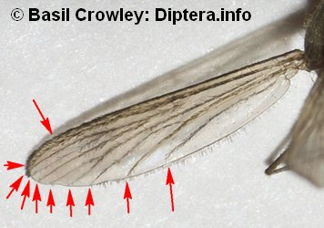
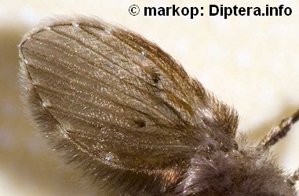
7
- Wing with 7, or less, marginal veins reaching the wing margin; costa not continuous around wing,
with a break, or, usually ending before or near wing tip.
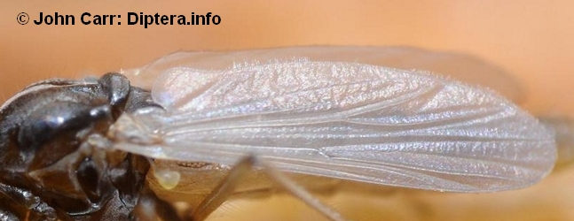
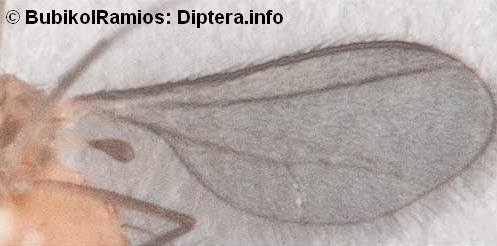
8
- Main crossveins near base of wing. Wing short and broad: broadly ovate,
often pointed; with long dense hairs on veins (moth-like flies); legs and body also with hairs. Sc very short.
Psychodomorpha, part
Psychodidae
- Crossveins not only near base of wing. Wing comparatively long. Sparsely to moderately hairy mosquito-like flies.
Culicomorpha, part
- Wings with not more than 6 longitudinal veins (usually 2 to 4);
costa usually with a break beyond insertion of vein R4+5. First tarsomere much shorter than second.
 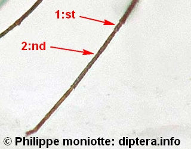
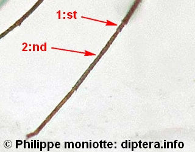
Bibionomorpha, part
Cecidomyiidae, part
- Wing with 6 or 7 veins reaching margin; costa not continuous around wing, usually ending before or near wing tip.
First tarsomere longer than the second.
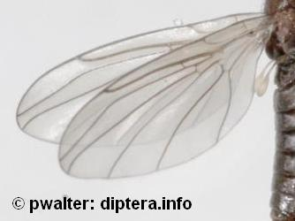
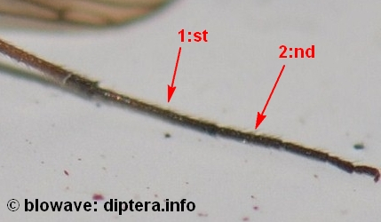
Culicomorpha, part
- Wing with discal cell.
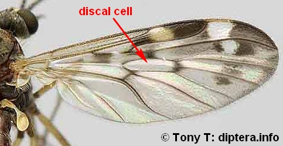
Bibionomorpha, part
- Wing without closed discal cell.
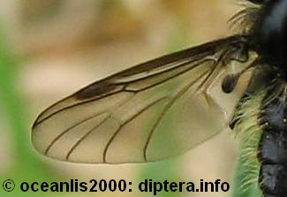
10
- Costa continuous around the wing. Tibiae without apical spurs.
Small fragile midges with weakly veined wings: R with not more than 2 branches.

Bibionomorpha, part
Cecidomyiidae, part
Lestremiinae
- Costa not continuous around wing. Tibiae with or without apical spurs.

11
- Tibia with distinct apical spurs.
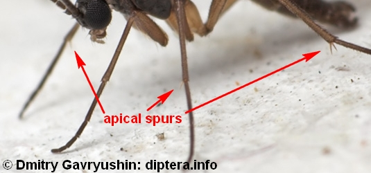
Bibionomorpha, part
- At least t2 and t3 without distinct apical spurs.
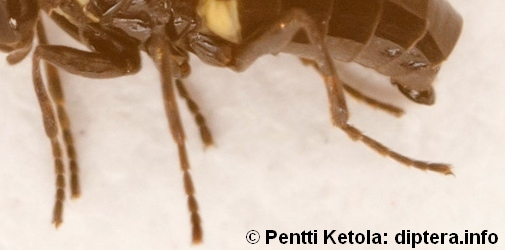
12
- Pulvilli well developed; R with 4 branches.
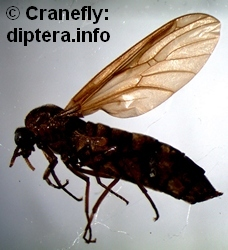

Axymyiomorpha
Axymyiidae
- Pulvilli absent or poorly developed; R with not more than 3 branches.
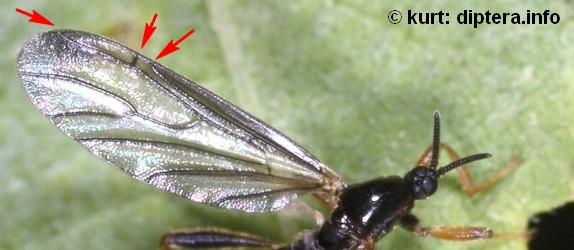
13
- Palpi one-segmented. Wing short and broad with
weltdeveloped anal lobe. Costa ending at R5 in middle of wing. M with 2 branches. Eyes widely separated below antennae.
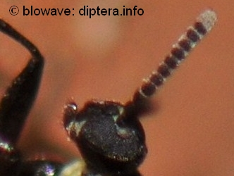
Psychodomorpha, part
Scatopsidae
- Palpi four-segmented. Wing long and narrow without anal lobe. Costa extending beyond R4+5 to the apex of the wing.
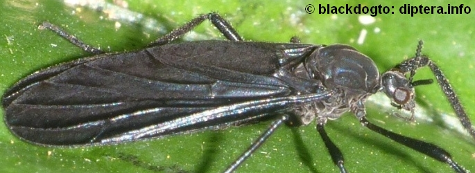
14
- Eyes widely separated below antennae.
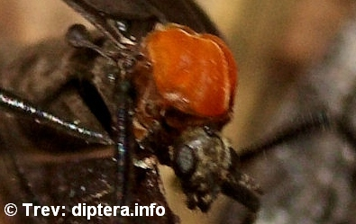
Bibionomorpha, part
Bibionidae, part
Pleciinae
- Eyes meeting or nearly meeting sagittally below antennae.
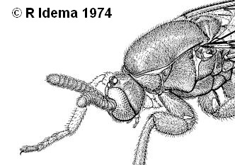
Psychodomorpha, part
Canthyloscelidae
- Flagellum clavate with an elongate annulated stalk and inflated knob;
eyes holoptic but beneath head and not over antenna1 bases. Mouthparts atrophied. Very small aquatic flies (c. 2 mm).
.JPG)
Blephariceromorpha
Nymphomyiidae, part
- Flagellum composed of at least six homonomous flagellomeres, or, of a consolidated first flagellomere plus a stylus or arista.
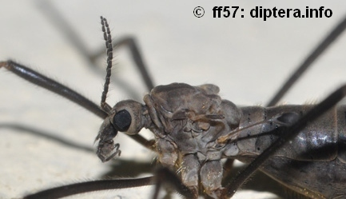
16
- Scutum with a complete V-shaped transverse suture (Tipuloidea).
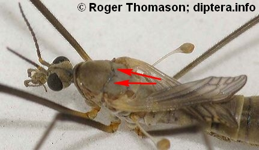
Tipulomorpha
- Scutum without a V-shaped transverse suture.
17
- At least anterior ocelli present.
or if ocelli absent: First tarsomere much shorter than second, or absent (i.e., tarsus four-segmented).
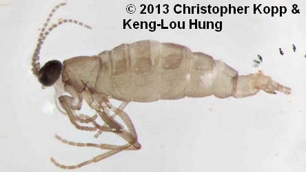
Bibionomorpha
- Ocelli absent and first tarsomere as long as or longer than second (tarsus always five-segmented).
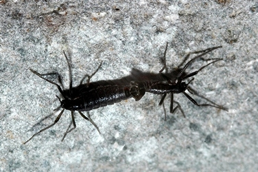
Culicomorpha, part
Chironomidae